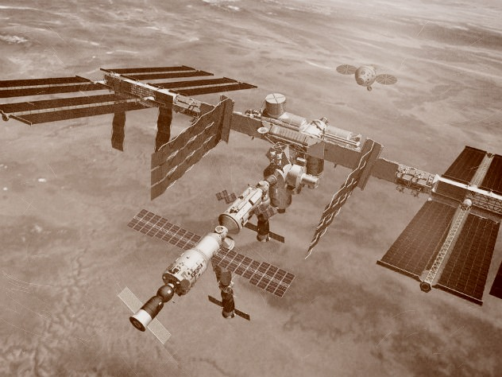
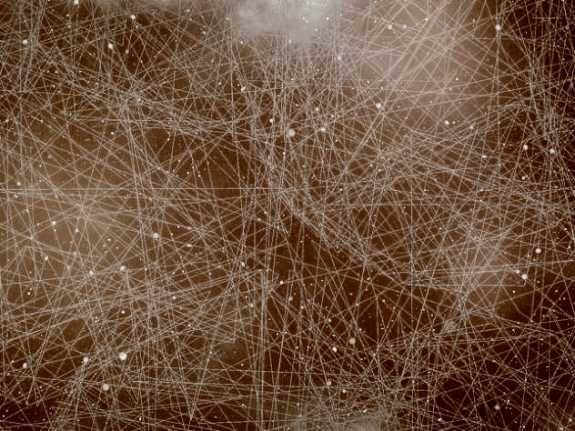

Названы страны, намусорившие в космосе больше всего
Вокруг Земли вращается около
170 миллионов кусков орбитального хлама
– от мельчайших кусков болтов до
полуторатонных станций связи
Свыше 4600 мертвых спутников и 14 тысяч
обломков космических аппаратов
вращаются на земной орбите. Примерно
95% орбитального мусора приходится
на спутники, выработавшие свой ресурс,
разгонные блоки и другие части ракет-носи
телей, а также потерянные космонавтами
инструменты.
Такие данные озвучили обозреватели
издания
Business Insider, проанализировав данные
из открытых
источников. «Этот хлам может
там оставаться сотни лет», –прокомментировал
информацию Билл Айлор, инженер по аэро
космической технике и специалист
по атмосферному спуску.

При этом ситуация постоянно ухудшается:
несмотря на то, что наша планета постоянно
притягивает к себе и сжигает в плотных слоях
атмосферы мертвые спутники и
отработанные
ступени ракет, новые пуски
постоянно добавляют
мусора на орбиту. К тому
же, космический хлам
способен «размножаться»:
столкновение нескольких
крупных обломков порождает
несколько сотен,
а иногда – даже тысяч более мелких фрагментов.
По оценке специалистов Европейского
космического агентства, в настоящее
время вокруг Земли обращается около
170 миллионов кусков орбитального
мусора. Большинство из них – фрагменты взрывных
болтов, комки краски – имеют небольшие
размеры и не угрожают космическим
кораблям. Но есть и такие, что разгоняются
до высоких скоростей.
«Страны за последние годы узнали, что,
создавая мусор, они создают риск для
своих космических систем, как и для
всех остальных», – отметил Айлор.
Передовиками в деле мусоризации
орбиты, как и следовало ожидать, оказались
лидеры освоения космических пространств:
Россия, США и Китай.
РФ оставила на орбите 6515 отслеживаемых
объектов; 1520 из них – действующие спутники,
а остальное – хлам, начавший копиться еще во
времена СССР.
На втором месте антирейтинга – США с 6211
фрагментами. При этом НАСА превосходит
россиян по количеству хлама от разрушенных
спутников и станций.
Третье место уверенно держит Китай: ему
принадлежит 3839 обломков.
В России появятся устройства для набора текста силой мысли
Серийный выпуск уникального аппарата
запланирован на 2018 год
Устройства, которые считывают мысли
пациента, появятся в России. Серийный
выпуск запланирован на 2018 год.
Новый аппарат позволит людям,
перенесшим инсульт или имеющим
тяжелые нарушения речи, общаться
с окружающими.
Устройство считывает мысли пациента
и передает их в виде текстового
сообщения.
О развитии новой технологии в России
стало известно в ходе международной
научной конференции
«Нейрокомпьютерный интерфейс:
наука и практика». Мероприятие
проходит в Самаре.

Сейчас уже готовы опытные образцы устройства
для клинических испытаний. Аппарат
работает на основе интерфейса
«мозг-компьютер». К голове человека
подключается беспроводная
гарнитура с электродами, которые
считывают импульс, посылаемый
корой головного мозга, когда
человек фокусирует внимание
на конкретной букве на клавиатуре.
В итоге идет набор текста.
Цена нового продукта пока неизвестна,
но уже понятно, что устройство крайне
необходимо многим людям. По данным
разработчиков, до четырех миллионов
пациентов в России в настоящее время
страдают тяжелыми нарушениями
речи и двигательной функции и обречены
на отсутствие полноценного общения,
сообщает «Российская газета».
Ученые нашли способ выявить ложь в текстовых сообщениях
Американские исследователи
проанализировали диалоги
пользователей в мессенджере и
пришли к ряду выводов
Человека, который говорит
неправду, вывести на чистую воду
не так-то просто, даже глядя ему в глаза.
Еще сложнее выявить ложь в текстовых
сообщениях.
Недавно ученые из университета
Корнелла в США попытались справиться
с этой задачей. Эксперты создали
специальное Android-приложение для
обмена письменными сообщениями,
и сохранили 1703 беседы, написанные
пользователями. От общей массы были
отделены диалоги, не содержащие лжи,
после чего ученые проанализировали
содержание всех бесед.
Как выяснилось, женщины лгут иначе, чем
мужчины. Достоверные сообщения
прекрасной половины человечества
содержали в среднем семь слов и были на одно
слово короче, чем ложные, тогда как
представители сильного пола
записывали как правду, так и ложь, в
среднем в семи словах.
Кроме того, оказалось, что, пытаясь солгать,
женщины чаще пользуются местоимением
«я» и словом «попытаться», а мужчины в такой
же ситуации чаще употребляют слова «мой»
и «наверняка».
Наконец, общим признаком ложных текстов
стало использование в фразах слов,
выражающих неопределенность,
таких, как «вероятно» и «возможно», а
также слова «конечно», пишет The Daily Mail.